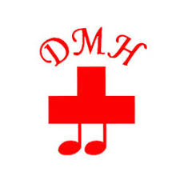
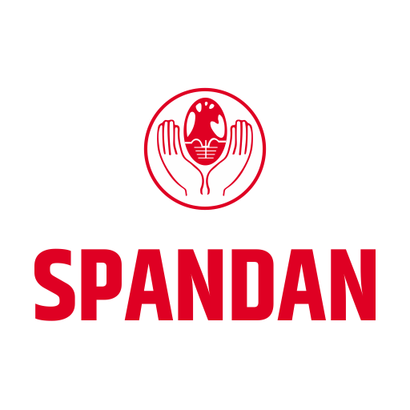

About me
After training in two premier government institutions in India and choosing Cardiology as my specialization, I chose to focus on and sub-specialize in cardiac electrophysiology and transcatheter valvular interventions. This was followed by a tenure as faculty at India's apex government medical institute - AIIMS, New Delhi. I now work in the private sector and my clinical practice centers on rhythm disorders (radiofrequency ablations, pacemaker and CRT/ICD implantations) and transcatheter valve therapies (TAVI/MitraClip).
Beyond the catheterization lab, I spend time reading novels, playing amateur chess and fiddling with Artificial Intelligence tools to solve clinical and other day to day problems.
Education
Doctor of Medicine (DM) - Cardiology
Jawaharlal Institute of Postgraduate Medical Education and Research (JIPMER), Puducherry
Doctor of Medicine (MD) - Internal Medicine
Seth G.S. Medical College & KEM Hospital, Mumbai
Bachelor of Medicine and Bachelor of Surgery (MBBS)
Seth G.S. Medical College & KEM Hospital, Mumbai
Work Experience
Assistant Professor, Department of Cardiology
All India Institute of Medical Sciences (AIIMS), New Delhi
Post-doctoral fellowship in Valvular Interventions
Aarhus University Hospital, Denmark

Post-doctoral fellowship in Cardiac Electrophysiology
Deenanath Mangeshkar Hospital, Pune
Current Affiliations
Ashwini Cooperative Hospital, Solapur

Spandan Cardiac Diagnostic and Research Center, Solapur
Selected Publications
Full List on Google Scholar →Indian Pacing and Electrophysiology Journal
Left Bundle Cardiac Resynchronization Therapy versus Left Bundle Optimized Cardiac Resynchronization Therapy
Read ArticleJournal of Practice of Cardiovascular Sciences
Harnessing Machine Learning for Predicting Atrial Fibrillation from Electrocardiogram Signals
Read ArticlePacing and Clinical ELectrophysiology (PACE)
Comparison of electrocardiographic parameters between left bundle optimized cardiac resynchronization therapy (LOT-CRT) and left bundle branch pacing—cardiac resynchronization therapy (LBBP-CRT)
Read ArticleIndian Journal of Pediatrics
Audio vs. Video as a Pacifier for Pediatric Echocardiography- A Randomized Controlled Trial
Read ArticleEuropean Heart Journal
Isolated posterior mitral leaflet elongation-related dynamic left ventricular outflow obstruction
Read ArticleKey Awards & Accomplishments
AV Gandhi SCAI 'Excellence in Cardiology' Award
Society of Cardiovascular Angiography and Interventions, 2024
Torrent Young Scholar and Best Orator Award
Torrent Pharmaceuticals, 2023
Indian Heart Journal Best Research Paper Award
Cardiology Society of India, 2023
Malekar Prize and Habbu Gold Medal in Internal Medicine
Seth GSMC and KEMH, 2023
Academic Excellence Award
Maharashtra Association of Physicians, 2018
Let's connect.
Open for clinical consultations and research collaborations